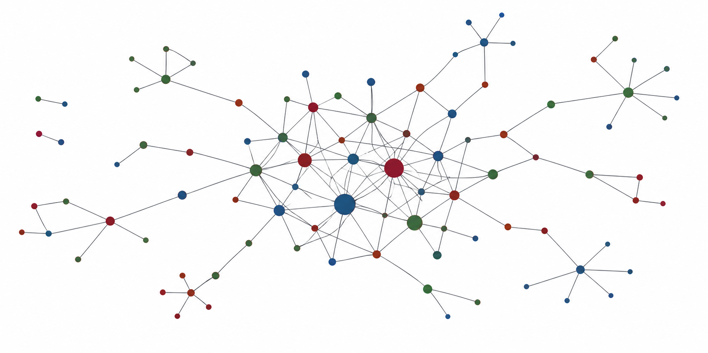

Fall 2026 · Online
2026年秋季网络经济学讨论班
Fall 2026 Network Economics Seminar
Paper is cheap, show me your talk!
组织者： 王思杰（Sijie Wang） 与 李国鹏（Guopeng Li）

讨论形式
每期由一名主讲人讲解前沿或经典文献，可以集中讨论一篇论文，也可以围绕同一主题合讲两至三篇论文。 我们鼓励主讲人假设听众对主题的基础较弱，并尽可能准备细致的 slides。
讨论班希望主讲人的讲解不仅能扩展听众的研究视野，也能带来一项可以实际使用的分析工具或技术。 理想的结果是：听众在讨论结束后能够把学到的方法用于分析新的问题，而不只是知道“存在这样一种方法”。 因此，这里的讲解会比一般学术报告更重视推导、直觉与可复用的方法。
技术细节由主讲人根据论文与自身兴趣把握。如果能够深入理解证明，并用自己的语言讲清其直觉，可以完整讲解证明； 如果更关注论文的思想，也可以集中提炼其核心机制，并解释论文为何能对领域作出重要贡献。
参与方式
原则上每位参与者主讲一期，选题可以来自下方文献列表，也可以自行选择与网络相关的论文或工作论文。 在其他主讲人的场次中，欢迎大家在时间允许的情况下积极参与讨论。
主讲人可以准备讲义或 slides，也可以现场手动推导。讨论将录屏留作内部复习，因此两种形式都可以形成有价值的学习材料。
Working Paper 讨论
本学期特别加入 Working Paper 讨论环节。主讲人可以汇报自己的最新研究，在内部讨论中尽早发现问题、完善论证。
“内部放开了激烈批判，到了审稿人那里就少受点罪！” — 曹志刚老师
时间与方式
- 方式
- 线上腾讯会议，会议号将在时间安排确定后更新。
- 时间
- 周一 19:00（北京时间）开始，具体场次将在讨论群内提前通知。
- 加入讨论
- 请联系组织者加入讨论群： stillwang@bjtu.edu.cn
文献列表
不限于 Top 5、领域顶刊及与网络相关的最新 Working Papers。
- Dynamic Opinion Aggregation: Long-Run Stability and Disagreement Simone Cerreia-Vioglio, Roberto Corrao, and Giacomo Lanzani. Review of Economic Studies, 91(3), 1406–1447, 2024.
- A Shocking Reversal: Flipping Complements and Substitutes in Network Games Evan Sadler and Steve Yeh. Working paper, 2026. Available at SSRN 6109228.
- Incentive Design with Spillovers Krishna Dasaratha, Benjamin Golub, and Anant Shah. arXiv:2411.08026, 2024.
更多文献、主讲人与具体日期将随学期进展持续更新。